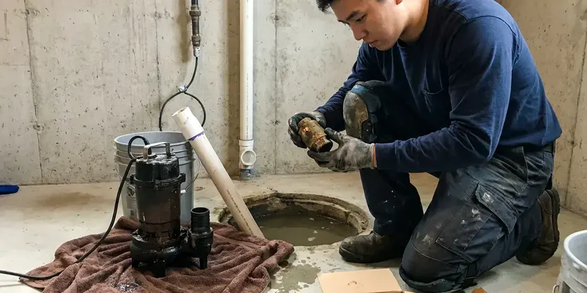

Water Heater Replacement in Oklahoma City, OK
JBK Plumbing hauls away the old tank on every water heater replacement in Oklahoma City, OK, no extra trip needed.
- Every Major Brand
- Done in a Few Hours
- Same-Day Swaps
- Licensed Installers
Hot Water Back Today in Oklahoma City, OK
We check the fuel, size and venting before we price it.
Water Heater Replacement in Oklahoma City, OK From JBK Plumbing
JBK Plumbing knows sediment shortens tank life, since it overheats the bottom of the tank and speeds up how fast the anode rod gets used up. Homeowners around Oklahoma City with hard water often add a softener to extend the life of water heaters and appliances. We can suggest models that handle sediment better. We also teach you a yearly flush, about 20 minutes with a garden hose, so sediment does not harden into a layer of rock on the tank floor.
Work we handle every week:
- Expansion tanks, drain pans and garage stands to code
- Larger tanks for bigger families
- Gas and electric tanks from 30 to 80 gallons

Additional Plumbing Replacement Services in Oklahoma City, OK
When repairs are no longer enough, our replacement services in Oklahoma City, OK deliver durable upgrades that restore full performance.


Sump Pump Replacement in Oklahoma City


Customers
Why Choose JBK Plumbing for Water Heater Replacement in Oklahoma City, OK?
Quotes from JBK Plumbing break out each line item: heater, labor, code upgrades, permit and haul-away. You can compare it line by line. When another bid skips the expansion tank or the permit, the gap shows on paper instead of on inspection day.
- Same-Day Service, Common tanks on the truck for same-day swaps.
- Right Size, People and bathrooms set the size.
- Safe Installs, Every relief valve tested and every gas joint leak checked.
Citywide Coverage
Wherever your home sits in Oklahoma City, in town or out on acreage, we can replace your water heater. Homes on wells often have more sediment and sometimes iron or sulfur in the water, and we can recommend an anode rod or a model that handles those conditions better than a standard tank. Well water is different.
Experienced Team
The crew is trained on current models from the major makers. Manufacturers change venting rules, connection sizes and control boards every few years, and a crew that keeps up installs the new model correctly the first time instead of reading the manual on your garage floor. Training never stops.
Safety-First Approach
Every heater gets tested before we leave. We run a full heat cycle, check the temperature at a nearby tap, test the relief valve and look over every connection, and we set the thermostat to 120 degrees unless you ask otherwise, since hotter water can scald a child in seconds. Higher settings scald.
Trusted Certified Oklahoma City Plumbing Services Professionals
At JBK Plumbing, we take pride in licensed, certified plumbing services throughout Oklahoma City, OK. Credentials matter in this trade. Every repair, install and maintenance visit follows strict safety and quality rules, and the plumbers doing the work carry recognized industry credentials.
Call Us Now PHCC Plumbing Contractor Recognition
PHCC Plumbing Contractor Recognition Better Business Bureau (BBB) Accreditation
Better Business Bureau (BBB) Accreditation Angi Certified Pro
Angi Certified Pro ISO 9001 Quality Management Certification
ISO 9001 Quality Management CertificationWhat Goes Into a Water Heater Swap in Oklahoma City, OK
Electric Water Heater Replacement in Oklahoma City
Electric water heaters in Oklahoma City usually fail from a burned-out heating element, a bad thermostat or a tank that has finally rusted through at the bottom. A bad element can be replaced. Tank leaks are the end, so we replace the heater and match the voltage, wattage and breaker size to your existing circuit. Hot water is back the same day.

Commercial Water Heater Replacement in Oklahoma City
Businesses in Oklahoma City put far more hours on a heater than a house, so commercial replacements need more capacity and faster recovery. Restaurants, salons and offices all draw differently, so we size by peak gallons per hour and required temperature, which may mean a larger tank, a booster or a tankless rack. We schedule around your hours.
Emergency Water Heater Replacement in Oklahoma City, OK
A leaking tank can put 40 or 50 gallons on the floor faster than most people expect. Close the cold supply on top, turn off the gas or breaker, open a hot faucet to relieve pressure, and we will aim to have a plumber and tank there the same day. Do not wait it out.
Tankless Water Heater Upgrades in Oklahoma City
Going tankless when the old tank fails is common, but it is a bigger job than a tank swap. A whole-home tankless unit can draw four times the gas of a 40-gallon tank, so the gas line from the meter usually has to be upsized, and the old metal vent gets replaced with stainless or PVC run to the maker's specs. You see both numbers.
Upsizing Your Water Heater in Oklahoma City
Running out of hot water usually means the house outgrew the tank. A bigger tank or a higher first-hour rating handles more back-to-back showers, and sometimes a 50-gallon high-recovery unit matches a 75 in the same footprint. Recovery rate counts too.
Hybrid Water Heater Installation in Oklahoma City, OK
Hybrid heat pump water heaters move heat from the surrounding air into the tank, using a fraction of the electricity a standard electric tank uses. They need space and airflow, often a room of about 700 cubic feet or a louvered door, plus a condensate drain, and they work best in a garage or basement that stays above freezing. They also cool the room.
Bradford White Water Heater Replacement in Oklahoma City
Bradford White sells through professional plumbers only, so you will not find one at a big-box store. They hold up well, and warranty support runs through the installing plumber, which makes a future claim easy for us to handle. Parts are easy to get.

Bradford White Water Heater Services in Oklahoma City
We use Bradford White a lot on our trucks because the tanks hold up and the parts are easy to find. When replacing one, we match fuel, size and venting, check whether the old warranty still applies, and register the new heater right away. Registration matters.
Water Heater Replacement Close By in Oklahoma City, OK
We understand the particular problems Oklahoma water and soil can cause for water heaters, and we plan for them on every swap. That might mean a model with a better anode, a drain pan with a line to the outside or an expansion tank on a closed system, and every one of those choices gets explained on the quote before we start. No surprises.
Our plumbers know the permit routine in Oklahoma City, OK, which keeps replacements simple. Most heater swaps need a permit and an inspection of venting, relief line and gas, so we file before starting and book the inspector for you. It saves time.
JBK Plumbing at a Glance
- Licensed and insured plumbers serving Oklahoma City, OK
- Same-day appointments and 24/7 emergency response
- Clear written estimates, no hidden fees
- 4.8-star rated by 318+ Oklahoma customers
Oklahoma City Map
Oklahoma City Information
- Population
- 702,767
- Area codes
- 405/572/580
- Service area
- Oklahoma City and communities within 40 miles
- Nearby
- Midwest City, Moore, Edmond, Norman
Mineral sediment and heat wear tanks out faster than most people expect, so many Oklahoma City, OK homeowners replace earlier than planned.
Expert Services
Call JBK Plumbing for honest, reliable plumbing from people who know the trade in Oklahoma City, OK.
Our Specialized Plumbing Services in Oklahoma City, OK
At JBK Plumbing, you get every kind of plumbing service from one company across Oklahoma City, OK. We go from leak detection all the way to full system installations, for homes and commercial buildings, and we do it quickly at a fair price. Explore our core services below:


What to Expect From a Water Heater Replacement in Oklahoma City, OK
Here is how a water heater swap runs, start to finish, in Oklahoma City, OK.
Call for a Quote
Call (405) 507-8396 and tell us what the old tank is doing. We book a time that suits you.
Assessment
A plumber checks the heater, venting and connections in your Oklahoma City home. You get a written price before we start.
Replacement
The old tank comes out and the new heater goes in. Required updates get added.
Frequently Asked Questions About Water Heater Replacement in Oklahoma City
Most replacements run between $1,200 and $3,500, depending on the type of unit. Gas or electric, tank size, venting changes, code upgrades like an expansion tank or drain pan, and whether the heater sits in a garage or an attic are what move a job from the low end to the high end. You get a firm number on site.
A tank stores and keeps hot a set amount of water, while a tankless unit heats water only as it flows. Tanks are cheaper and simpler to swap, and tankless saves space, avoids standby loss and lasts longer, but needs more gas and new venting. Both have a place.
Water around the base, rusty hot water, popping or rumbling as it heats, and running out of hot water faster than you used to. A tank past 10 years old with any of those signs is usually worth replacing before it fails, since a ruptured tank can put 40 or 50 gallons on the floor in minutes. Age is a big clue.
It depends on age and the problem. If the heater is over 10 years old, breaks down often or the tank itself is leaking, replacement is usually the better value, while a newer heater with a bad thermostat or element is usually worth repairing. We price both.
Bradford White, Rheem and AO Smith. All three hold up and offer several warranty lengths.
Most tanks carry 6 to 12 years from the maker on the tank and parts. JBK Plumbing adds a workmanship warranty on the install.
Tank heaters often last 8 to 12 years, and sediment can shorten that. Homeowners around Oklahoma City with hard water often add a softener to protect water heaters and appliances. A yearly flush and an anode check every few years help a tank last toward the top of that range.
Little or no hot water, rusty water, banging or rumbling, and leaks around the base. Tank leaks do not get better.
Hear From Customers Who Hired Our Plumbing Experts

Nathan E.
Our tankless heater kept throwing an error code and shutting off mid shower. The tech flushed the heat exchanger, which was full of scale, and replaced a bad flow sensor. Hot water has been steady for half a year now.
Water Heater Repair · Moore, OK
Angela D.
Our sump pump quit during a storm and the water was an inch from the basement carpet. JBK Plumbing put in a new pump with a battery backup that same evening. We have had two heavy rains since. It kicked on both times.
Sump Pump · Edmond, OKKaren W.
After our third pinhole leak in copper, we stopped patching. JBK Plumbing gave us a written plan room by room and repiped the house in PEX while we stayed in it. The crew covered our floors every morning and cleaned up every night.
Repiping · Stillwater, OK
Mark T.
The floor drain in our office break room backed up every few weeks. The plumber ran a cable, then put a camera down and found roots at a joint about thirty feet out. Seeing it on the screen made the decision easy.
Drain Cleaning · Moore, OK
Jessica T.
We were adding a gas range in a kitchen remodel and needed a new line run from the meter. The plumber pulled the permit, ran the pipe through the crawl space, and had it inspected and approved within the week.
Gas Line Repair · Oklahoma City, OK
Megan L.
Our upstairs tub drained so slowly that every shower turned into a bath. JBK Plumbing pulled a wad of hair out of the stopper and then snaked the line past the trap. Three months later it still drains fast.
Drain Cleaning · Moore, OK